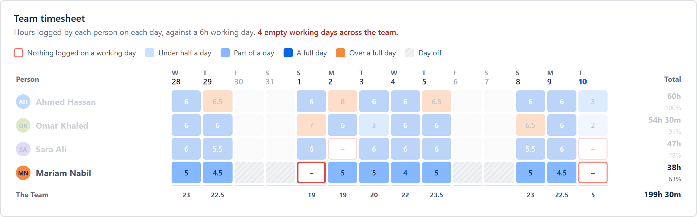
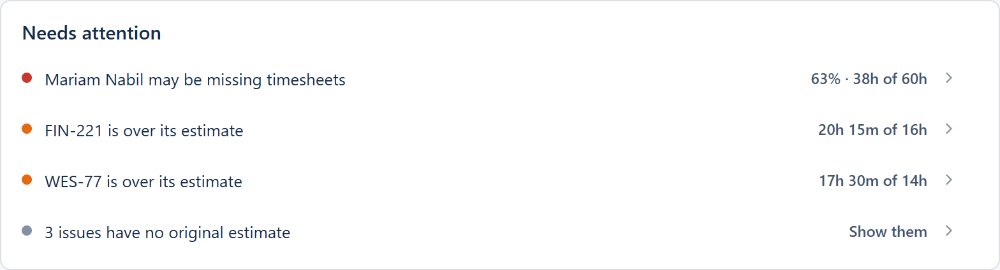
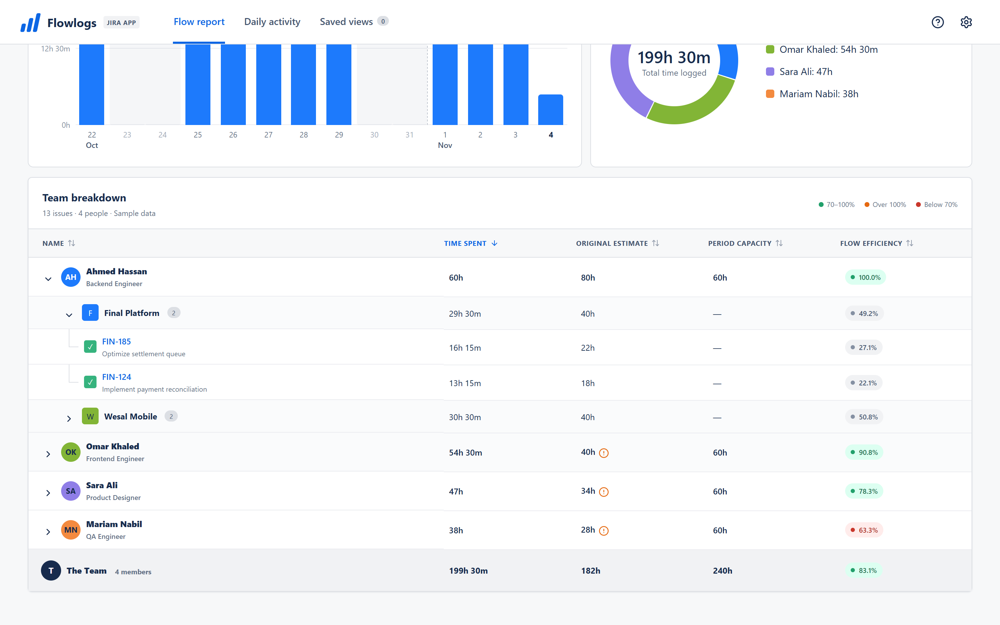

An empty working day
Mariam logged nothing on 1 Nov. Every other working day in her row is filled.
Flowlogs turns the worklogs your team already keeps in Jira into a team timesheet, a capacity report and a PDF you can send. There is nothing to set up.
Runs inside Jira. Your data never leaves Atlassian.


On 1 Nov, Mariam logged nothing. Flowlogs already flagged it: 63% of capacity, 38h of 60h.
Mariam logged nothing on 1 Nov. Every other working day in her row is filled.
Needs attention puts Mariam first: 63% of capacity, 38h of 60h.
The PDF for the sprint review shows the same gap, with the charts and totals.

Every person, every day, coloured against a working day. A day with nothing logged gets a red outline, so you know who to nudge before the sprint review.

Total time, capacity and flow efficiency at the top. Underneath, every number traced from person to project to issue.

An A4 PDF with the charts, the team timesheet and the full breakdown, with clickable issue keys. Excel and CSV match the screen exactly.

Flowlogs reports on time you already log. If you need approvals or client billing, a full time-tracking suite is the better fit.
| Question | Flowlogs | Spreadsheet exports | Time-tracking suites |
|---|---|---|---|
| Setup | Install and open | Rebuild it every time | Admin setup and training |
| Cost | Free | Free, but costs hours | Paid per user |
| Team timesheet | Built in | By hand | Yes |
| Capacity against estimates | Built in | Formulas to maintain | Yes |
| PDF report | One click, A4 | By hand | Yes |
| Approvals and billing | Not included | No | Yes, their strength |
Yes. It is free on the Atlassian Marketplace for Jira Cloud.
No. Flowlogs runs on Atlassian Forge, declares no external network access, and keeps settings and saved views in Atlassian's own storage. Exports are created in your browser.
The day it was logged in Jira. A report for last week shows exactly what was entered last week.
Flowlogs reads Jira as the person viewing the report, so everyone sees only the projects and worklogs their Jira permissions allow. Settings and saved views belong to each person.
From the hours per day and days per week you set in Flowlogs, multiplied by the working days in the range and the people in scope. The working week starts on Sunday.
Arabic names and text show correctly on screen and in every export, including the PDF. The interface itself is in English.